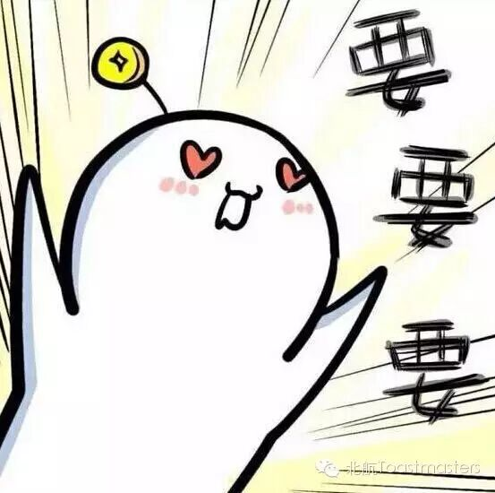
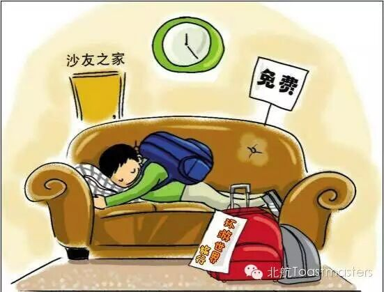
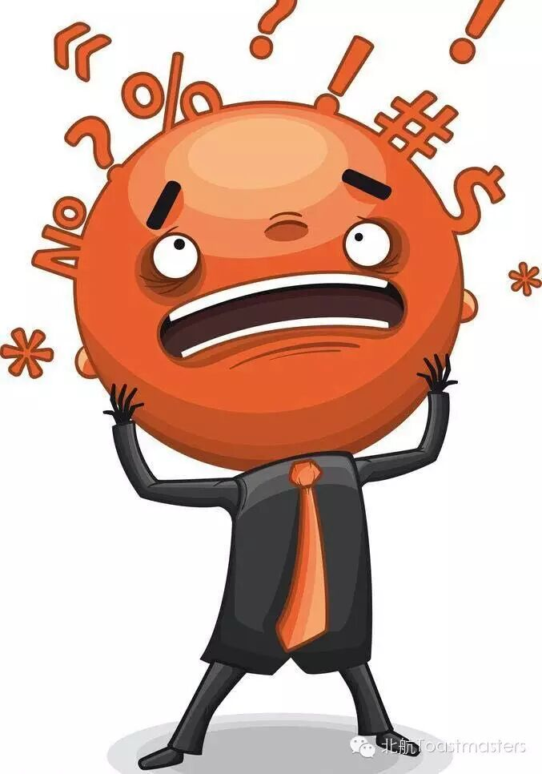

11.11
TM：Summers
TTM：Crystal

How many of you wanted to cut your own hands on 11th November? And how many of you started to lead a life like refugees after this grand event? At this time of the year, our shopping charts are always full of stuff. It's said that the trading volume reached 10 billion in 12 minutes on the double eleven. So how many things did you buy this year？
Andy CC2 Couch Surfers

Many of us like traveling, and we all get used to living in those five-star hotels, ignoring the local culture among those ordinary citizens. As a couch surfers, Andy, however, has his own experience about traveling.
KiKi CC4 Iam not ready

Got a plan? No? It is the fact that we have to face up to those difficulties when we do not have enough preparation. However, this kind of challenges does teach us a lot of things that can't be learned from school. Our reporter Kiki has her unique ways to handle the dilemma.
Bowen CC5 Brother
Friends play an important part in our life. Friends can share our sorrows when we are down and share joy when we are happy. When we start to share everything withour friends, we call them brother. Bowen has some stories to tell about his best friend.
Toastmasters International (TI) is a nonprofit educational organization that operates clubs worldwide for the purpose of helping members improve their communication, public speaking, and leadership skills.

https://mp.weixin.qq.com/s/lq4Z189XeIRYDempgpE3sA
本页为抢救式本地归档，图文已永久保存。